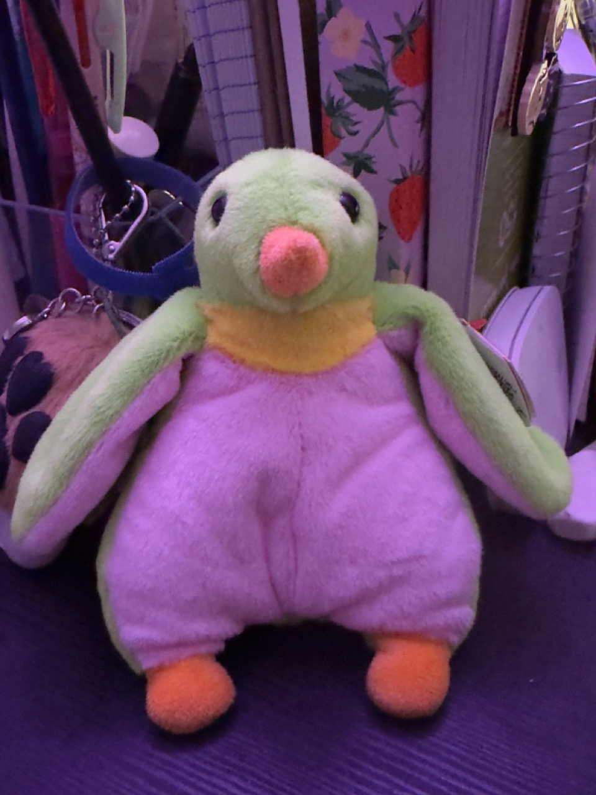

My Oh My Little Chicken

I picked the chicken up at a nearby crafty supplies store at the mall (and for sure I know it's not supposed to be a chicken.)
I did not buy it at first, cause when thinking about moving and how many things I had already...too overwhelming... So in the next several weeks, everytime I passed by the show window, I would see it sitting peacefully. I remembered I couldn't resist bringing it home on the third or fourth time, and I tried to convince myself that the chicken's color is so 'fascinately' different (this is the normal trick when I try to lie to myself to buy more).
I picked it up from the other two, and the seams/stitches, the eyes, and the beak...umm..right on point! 🥰